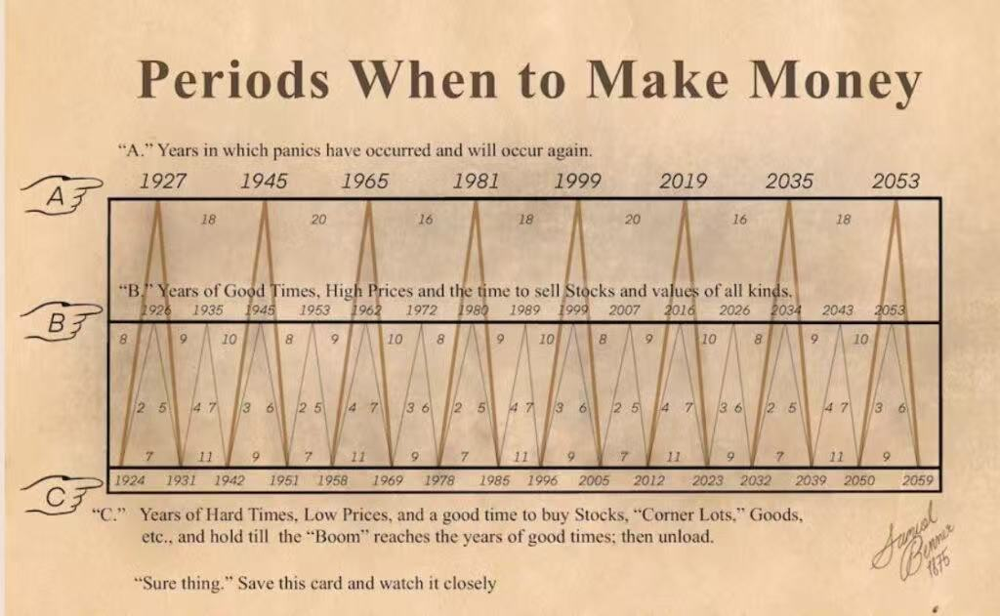

我们在哪，接下来发生什么，终局是什么
一句话裁决
我们站在泡沫顶部的右侧、减记级联的 2/5 级。接下来不是一步崩塌，而是三段程序：反弹埋人 -> 减记确认 -> 违约裁决。终局是 2028-2032 的漫长出清 -- 去泡沫是市场的正常自愈行为，买入年不是崩塌日，而是 AI 产业真正的起点。
逻辑主线：为什么去泡沫是市场的正常行为
读所有章节之前，先装这条因果链 -- 本手册的每一个触发器都挂在它上面。
P1 -- 唯一判据是 AI ROI 数据
AI 革命成立与否只有一个判据：应用层单位经济能否闭环。当前实况：价值链利润淤积在硬件一层（NVDA 毛利 71%，内存卡特尔把常规内存四年抬价约 700%），模型层年烧数十亿美元级，应用层普遍无利润规模化。下游两层断裂的产业，硬件层的利润就不是利润，是透支。
P2 -- 付费天花板已被开源锁死，财源两头断
Kimi/DeepSeek 类开源低价模型 cap 了企业付费上限：能力差距以约 1 分/月收敛（现 80.6 vs 88.7，2027 H1 触及 85-88 agent 门槛），企业永远有一个"便宜到近乎免费"的替代锚，闭源模型商失去涨价权。大众端付费率仅约 5%（Adam 锚，与公开的付费转化估算同量级）。于是 Anthropic/OpenAI 的财源被两头夹断：上游硬件收税，下游收入被 cap -- 中间层的商业模式在数学上不闭合，只能靠循环融资续命（这正是第 V 节 vendor financing 证据链的根因）。
P3 -- 硬件 margin 太高不健康，暴利在杀死自己的需求
71% 毛利是对整个产业收的税。税不降，应用层永远到不了 scale economics，AI 革命自己跑不通 -- 垄断利润在杀死自己的需求侧，这是自我否定结构。硬件 margin 必须回归正常（40s 制造业水平），token 成本趋近水电，AI 产业才能发展。这不是空头愿望，是产业存续的必要条件。
P4 -- 所以去泡沫是自愈，不是灾难
市场正在做的事（逐名重定价信用、惩罚上调 capex、把 GPU 残值打到 27%）就是把税率打回可持续水平的正常机制。本手册所有空头段不是看空 AI，是看多"去暴利之后的 AI"：出清是 Wave 3 真实应用的前置条件。2032 前后的建仓点之所以是一代人的机会，正因为那是应用层单位经济第一次成立的时刻。
现在在哪（2026-07-29，全部已验证）
顶部签名已经集齐：买方以 $950B 峰值恐慌锁约（顶部行为学的教科书样本）；7月半导体单月抹去超 $1T 市值；上调 capex 被惩罚的 regime 已被 TSM/GOOGL 验证两次；07/27 -- 财报前两天 -- ORCL/Meta/NVDA/GOOGL 的 5 年期 CDS 同日创历史纪录，其中 NVDA 一个月翻倍。级联五级中，第 1 级（盈利下修）已点火、第 2 级（评级下调）已现首例（ORCL BBB-），第 3 级（金融机构减记）为零 -- 但它的物理前置（GPU 残值 27%、BDC 折价 26%）已全部就位，缺的只是会计确认。Fed 在鹰派 hold：核心 PCE 3.4% 没压住，点阵图隐含再加一次，市场只定价 5.4% -- 单名 CDS 与 HY 指数、点阵图与期货定价，两组分层同时存在，市场在逐名承认、在系统层否认。
接下来发生什么（按次序，每步带触发器）
| 窗口 | 事件 | 裁决点 |
|---|---|---|
| 本周 -> 08/26 | 财报绞肉机：MSFT/Meta/AMZN/AAPL（07/29-31）+ NVDA 终审（08/26） | 上调 capex 被卖 = regime 三连确认；单名 CDS 财报周走向 = 信用侧同步验证 |
| 08/12 | 7月 CPI：油价 + 电价 + 内存传导入账 | 走热 -> 12月加息定价从 5.4% 重新武装（5月曾冲 51%）；AI OPEC 压制论点火 |
| Q4 2026 | E-revision 入账季：FY27 指引砍单台词 + mark-to-market 首印 + NAND 反转灯 | 主收割段，目标区 QQQ 560-600 / VIX 28-40；级联 1 级走满 |
| 12月 | 风险簇：SPCX 解禁（12/12）+ FOMC（加息为尾部，热 CPI 即武装） | 2018/12 结构复刻与否；战术多头 12/12 前清场 |
| 2027 | 埋刀客年：2-3 次 +15~30% 熊市反弹，durable rally 仅 40-50% | 首例 AI 抵押减记 = 级联升级 3/5 = KS-7 触发；反向证伪：2027 Q2 零减记且 HY <320 = 回到 pivot 反弹剧本 |
| 2028 | Layer 2 总崩：physical AI 证伪 + 无下一棒叙事 | NVDA -70~80% 终局区；减记从个案变成潮 |
| 2028底-2029H1 | 违约潮窗口（WorldCom 间隔律：顶部 +28 个月） | 最大单体爆雷候选：高杠杆 neocloud / SPV / 控股杠杆；HY OAS 穿 500 = KS-2 全触发 |
终局（End game）
算力公用事业化：NVDA 毛利从 71% 向 40s 制造业归位，P/E 15-20x，token 成本趋近水电 -- 这是终点状态，不是预测分歧点，分歧只在到达路径的长度。债务危机是 25-30% 的尾部而非基线：基线是"逐名重定价 + 减记潮 + 个体违约"的有序出清，升级为 systemic 的传导器是银行-NBFI 管道（>$1.2T，监管自认盲区）。出清底部窗口：激进读法 2029（违约潮出清即底），Benner 读法 2032（买入年）-- 两者之间的每一次"底部确认"都按熊市反弹纪律处理。2032 前后是一代人的建仓点：真实应用（Agent/具身/垂直AI）在去暴利的土壤上第一次拥有成立的单位经济。仓位纲领不变：空头主线 rolling 2-12 个月滚动、30-40% 现金铁律、Wave 2 只租不押、tranche 3 冻结直至减记出清。
修正摘要
修正一：CAPEX 方向已被证伪
阶段一不是"指引下修"，是上调被惩罚。TSM 上调 $60-64B 被砸 -4%，GOOGL 上调 $195-205B 被砸 -5%。真正的下修在 10 月 FY27 指引季，以"component pricing normalization"台词登场。
修正二：买方在抢锁，不在砍单
MU 签 16 份多年协议 $22B、Musk 公开哀嚎"pretty insane"并锁定数年产能。7/25-26 韩美峰会 $950B 供应包（见第 IV 节）是同一行为的最大样本：买方峰值恐慌锁约 = 顶部签名。联合反抗属于 2027 合同重谈期，不属于现在。
修正三：付费断崖是轨迹不是现状
中国/开源 band 以约 1 分/月逼近 85-88 分 agent 门槛（现 80.6 vs 88.7），抵达时间 2027 H1，恰与 Anthropic 年均 $40B、OpenAI 各承诺的合同 step-up 同季相遇。剪刀合拢写在日历上。
修正四：-80% 属于 2028，不属于 2027/5
Layer 1（2026 H2）= 数据中心去泡沫 -30~40%。Layer 2（2028）= 接力证伪后的数字+物理双杀，-70~80%、P/E 15-20x 终局。中间隔层的性质，v2.1 被第 V 节的减记级联 vet 重新定价：从"多头段"降级为"战术反弹段"。
修正五（v2.1 新增）：12月加息定价 77% 是错读
实时 FedWatch（07/28）：12月不动 78.2% / 降息 15.4% / 加息仅 5.4%。v2.0 把"不动概率"误读成"加息概率"。但 6 月点阵图 YE2026 中位数 3.8%（3 月为 3.4%）= FOMC 自己的中位路径隐含再加一次息。市场 5.4% vs 点阵图隐含一次加息，这个分歧本身就是仓位（见第 IV 节）。
Benner 周期先验：2026 卖，2032 买

这张 150 年前的农商周期卡片以 8-9-10 年节奏排布，与本手册的关系是先验校准，不是证据。它的命中记录值得尊重：1999 卖出年对上 2000 年顶，2019 恐慌年对上 2020 年崩，2023 买入年对上本轮牛市起点（Nasdaq 2022/12 见底）。它的脱靶同样要记账：1945 无恐慌，1965 的对应物是 1966 信贷紧缩，节奏是统计韵脚不是物理定律。
Benner x 级联合成路径（预测）
把第 V 节的级联五级铺到 Benner 节奏上，得到一条可证伪的合成路径。历史校准点：2000/3 顶部到 WorldCom 爆雷（级联第 4 级）间隔 28 个月；到最终底部（2002/10）间隔 31 个月；durable 反弹从 -78% 起跳。以 2026 H2 为本轮顶部锚，逐级外推：
| 年份 | Benner 行 | 级联位置 | 预测内容 |
|---|---|---|---|
| 2026 H2 | B 行卖出年 | 级 1 点火 | Layer 1 破裂。顶部签名已集齐：$950B 峰值恐慌锁约、7月半导体抹去 $1T 市值、买方抢产能哀嚎。E-revision 从 AVGO/IBM 蔓延至 FY27 指引季。 |
| 2027 | 下行段 | 级 1 -> 2 | 盈利下修全面入账，卖方系统性转空（KS-6 点火）。预计 2-3 次 +15~30% 熊市反弹全部失败 -- 埋刀客年。durable rally（40-50%）若兑现也属租用段，不改路径。 |
| 2028 | 下行段 | 级 2 -> 3 | Layer 2 总崩（NVDA -70~80% 终局区）+ 首批金融机构减记：GPU 残值（现 27%）跌穿租赁/ABS 模型假设，私募信贷 marks 被审计强制确认，BDC 折价（中位 26%，2026/03 印）兑现为损失。 |
| 2029 | 下行段 | 级 3 -> 4 | 违约潮窗口。WorldCom 间隔律（顶部 +28 个月 = 2028 底-2029 H1）指向最大单体爆雷：候选 = 高杠杆 neocloud、SPV 结构、SoftBank 型控股杠杆。HY OAS 穿 500 危机区 = KS-2 完全触发。 |
| 2030-31 | hard times | 级 4 -> 5 或出清 | 清算段：低波动阴跌、政策大宽松、无人再谈 AI。debt crisis 是否升级为 systemic（25-30% 尾部）在此裁决 -- 传导器是银行-NBFI 管道（>$1.2T，FSB 盲区）。 |
| 2032 | C 行买入年 | 出清完成 | "hard times, low prices, buy corner lots"。Wave 3 建仓年：真实应用（Agent/具身/垂直AI）在去暴利土壤上的 ROI 闭环。这是一代人的入场点。 |
| 2034-35 | B 行 2034 / A 行 panic 2035 | 下一周期 | 复苏顶与下一次恐慌。按 Benner 节奏预约下一张卖出卡。 |
路径的证伪条件：至 2027 Q2 零减记且 HY OAS 低于 320（KS-7 反向）-> 本路径作废，回到 2019 型 pivot 反弹剧本；反之，首例 AI 抵押减记落地 -> 本路径从"先验"升级为"主剧本"。
主时间线
P0 / 现在 -> 2026-08-15 / 空头段
绞肉机：Mega-cap 财报周
反应函数已被 TSM/GOOGL 验证两次。7/29-31 是同一台绞肉机的测试 #3-#5，80% 概率至少一家被卖。
- 07/29-31：MSFT / Meta / AMZN / AAPL 财报。判据单一：上调 capex 被卖还是被奖。
- 08/12：7月 CPI。捕捉油价与 AI 输入成本（电价 YoY +4.0%，内存/组件传导）入账。若走热，12月加息定价从 5.4% 重新武装（5 月先例：通胀冲击时加息定价曾冲 51%）。
触发器：component pricing 数字升级（4月 $5B -> ?）；MSFT RPO 里 OpenAI $250B 质量问答；Meta 是否宣布发股；FY27 capex 形容词计数（"significantly higher"）。
动作
8月腿：周二盘前先锁 30%，财报反应日兑现 50-70%，8/12 后全部清零。近月纪律：永不持近月穿越理论上限。
P1 / 2026-08-15 -> 09-30 / 空头段
终审：NVDA 反应函数判决
数据必然华丽（GOOGL $205B capex 就是它的订单簿）。唯一变量是市场用哪套规则定价它。
- 08/26：NVDA 财报。被卖（55-60%）= beat-then-die #4，最后庇护所倒；被奖励（40-45%）= 税制续期，弱手推 F&G 向 Greed。
- 09月中：FOMC 鹰派 hold，12月 dots 定型（6月中位数已在 3.8%）。
- 09月：Anthropic $900B+ 轮结果 = circular 续命判决（vendor 们有一致动机让它 close）。
- 09月末：SPCX 12/12 解禁的 front-run 研报开始出现。
触发器：NVDA 自家 equity 组合 mark-down 首印（CRWV/Nebius/xAI）；客户集中度披露；guidance 是否"不再爆发"。
动作
被卖 -> press 近月；被奖 -> 按 F&G 纪律等 Greed 55+/75+ 装填第二批 Dec'26。9/18 腿：9/15 前无条件清零。
P2 / 2026-10-01 -> 11-03 / 空头段
主收割：E-revision 打印层
价格 7 月已抢跑，10 月是入账日：折旧满额 + 最贵 memory 合同进 COGS + FY27 指引季。"Q3 财报难看"的精确形态 = margin + guidance + 账面投资损失三线齐暗，不是收入 miss。
- 10月中：Q3 财报，运营 margin 全线压缩；"component pricing normalization"预写砍单台词登场。
- 10月中：Mark-to-market 首印。GOOGL $94.1B SpaceX 持仓 -> 账面损失约 $25-30B（估），Q2 的 $99B 收益反向鞭打。
- 10月初：NAND Q3 合同价 QoQ 数据。低于 +30% = memory 反转确认 = Jun'27 腿最后确认灯。
- 11/03：中期选举，通胀替罪羊政治峰值。
目标区：QQQ 560-600｜SPX 6,300-6,700｜VIX 28-40。
动作
Dec'26 腿在第一腿目标主收割；Jan'28 spread 兑现 1/3-1/2，余下留作 Layer 2 保险；30-40% 现金铁律不动。
P3 / 2026-11-03 -> 12-12 / 换挡窗口
换边窗口：机械反弹
回补 + 选举落地 + 抢跑 2027 pivot。反弹没有可持续的道理，但有机械的道理。你的纪律是利用它，不是否认它。v2.1 注：第 V 节 vet 之后，此段与 P5 的所有反弹一律按熊市反弹纪律处理 -- 可租用，不可持有。
- VIX 30-40 时卖 GOOGL/TSM 的 -40% tier cash-secured puts：被付钱等待 Wave 2 入场价。
- Wave 2 tranche 1（仅 1/4 弹药）：GOOGL > TSM > GEV > AMZN。
- SPCX 反弹 $130-150 建 12月后 expiry puts（解禁交易，第一目标 $70-80 流量地板）。
- 绝不买名单：memory / neocloud / humanoid / TSLA / SPCX 多头。（冲突上报：thesis tracker 的 sister-long 篮子含 TSLA 多头 stub（2026-05-12），与本名单直接冲突。本手册为 07/26 后手文件，暂以本名单为准，终裁归 Adam。）
P4 / 2026-12-12 -> 12-31 / 空头段
风险簇：解禁 + FOMC
2018 年 12 月的潜在复刻窗口：Warsh 若在弱市中加息 = 最后的鹰派表演，也是泡沫之死治好通胀、为 2027 转向铺路的仪式。v2.1 修正：加息不是基线（市场定价 5.4%），是尾部情景 -- 武装条件为 8-11 月通胀重新走热（触发器见第 VI 节 Fed 卡）。
- 12/12：SPCX 锁定期到期，$200B+ 级潜在供给，前置 front-run 已在 10-11 月发生。
- 12月中：FOMC。基线鹰派 hold；若 CPI 连续走热则 25bp 加息砸进弱市（2018/12 结构）。
动作
战术多头 12/12 前全部离场；若加息尾部兑现砸出投降低点 -> tier-2/3 价格出现 -> tranche 2。
P5 / 2027 Q1 / 换挡窗口（v2.1 从多头段降级）
点火：Pivot 与第 3 年引擎
原判断：第 3 年上涨不需要 AI 修复（2003 年 Nasdaq 废墟 +50%，2019 年零盈利增长 +29%）。v2.1 降级理由（详见第 V 节）：2003 与 2019 的可比性被债务周期变量切开 -- 2019 型（无债务出清，pivot 即反弹）与 2003 型（债务出清后从 -78% 起跳）是两个物种。本轮发债结构更像 2000-02，durable rally 概率从 65-70% 下修至 40-50%。
- Fed pivot：财富效应摧毁 + 裁员 = 需求破坏 = 通胀被治好。但历史基准率：2001 年 Fed 降息 11 次，市场仍再跌两年。pivot 是必要条件，不是充分条件。
- 砍 capex -> FCF 爆炸：Meta 2023 模板，惩罚加 capex 的 regime 会对称地奖励砍 capex。此引擎仍立。
- Reset 起点：从 -20~30% 起跳的回补反弹。此引擎降级为战术级。
- 国家意志：2028 大选刚需托底；OpenAI IPO 重启 = 庄家维持机制翻回 ON。
动作
pivot 信号 -> tranche 2（但 tranche 3 冻结直至第 V 节级联走到第 4 级并出清）；ORCL 按"砍 capex 公告 = Meta 时刻"处理（trade -> hold 升级判据）。
P6 / 2027 Q2 -> Q3 / 裁决段
骑乘 + 侦察：剪刀合拢与弹性裁决
反弹（若有）与 physical AI 高潮同场。同一季度，两条已知曲线相交：band 触及 85-88 分 agent 门槛 x Anthropic 年均 $40B / OpenAI 承诺 step-up 生效。
- 版本裁决：廉价 token 后真实需求弹性 >1（版本A）-> tranche 3 加满，持有到底。
- 弹性 <1（版本B）-> rally 定性为 Layer 2 最后疯狂 -> 多头止步，开建 2028 空头名单（humanoid 纯玩 / TSLA / Figure 若 IPO）。
- SNDK Jun'27 腿随 NAND 反转在 H1'27 收割（-50~70% 路径）。
C端专项指标：OpenAI 广告 rollout 进度（= 订阅认输书）；免费层能力 vs 付费层差距；NET pay-per-crawl 收入化。
P7 / 2028+ / 终局
Layer 2 总崩：终局
physical AI 证伪（humanoid 量产跳票 + robotaxi 经济性不成立）+ 没有下一个接力叙事。原报告的终局判断在此兑现，晚了一个接力棒的长度。v2.1 注：若 Benner 节奏占优，终局后的清算段延伸至 2030-2032，买入年不在崩塌日。
- NVDA -70~80%（数字+物理双杀），P/E 回落 15-20x，毛利向 40s 制造业归位。
- Memory 毛利 84.6% -> 十几个点或亏损（trough 惯例）；算力公用事业化，token 成本趋近水电。
- 猎场：Jan'28 余仓 + 2028 LEAPS；猎物：humanoid 叙事纯玩。
- 真实应用（Agent/具身/垂直AI）在去暴利的土壤上建立 ROI 闭环 -- 版本A 的 Wave 3 从这里开始。
反弹路径预测与做空时点表
出清期的反弹不是噪音，是弹药装填窗口 -- 空头的入场纪律全部反着挂在反弹上。历史锚：2000-02 Nasdaq 途中四次 +30~40% 熊市反弹全部失败；本表幅度按指数级估，高 beta AI 单名反弹幅度通常为指数的 2-3 倍（反弹时空头最痛在单名，这正是分批纪律存在的理由）。
| # | 反弹窗口 | 驱动 | 预计幅度（指数级） | 定性 | 做空动作（timing + 工具） |
|---|---|---|---|---|---|
| R1 | 07/29 -> 08/26 前 | 财报周若 MSFT/Meta 被奖励的反抽 + NVDA 财报前 front-run | +3~6% | 事件反抽 | 反抽尾部装 8 月腿（盘前锁 30% 纪律照旧）；F&G 回 55+ 才动，Fear 区永不加空（KS-4） |
| R2 | 08/26 后（若 NVDA 被奖励，40-45% 概率） | 税制续期叙事，弱手追入，F&G 冲 Greed | +5~8% | bull trap | 第二批 Dec'26 腿装填窗口：Greed 55+ 分批、75+ 满装；被卖情景（55-60%）则直接 press 近月，不等反弹 |
| R3 | 11/03 -> 12/12 | 选举落地 + 空头回补 + 抢跑 2027 pivot（P3 机械反弹） | +8~15%（从 P2 目标区 QQQ 560-600 起） | 机械反弹 | 只做多头租用（tranche 1 仅 1/4 弹药）；SPCX 反弹 $130-150 建 12 月后 expiry 解禁 puts；战术多头 12/12 前无条件清场；反弹尾部（VIX 回落至 20 下）压 12 月 FOMC 腿 |
| R4 | 2027 Q1-Q2（pivot rally，本轮最大也最危险） | Fed pivot + 砍 capex FCF 叙事 + 踏空追赶 | +15~30%；durable 概率仅 40-50% | 裁决在 KS-7：首例减记落地 = 熊市反弹；零减记且 HY <320 = 转 2019 型剧本 | Fear 区起弹不加空、全程等 Greed 回摆；Greed 55+ 分批装 Jun'27 腿、75+ 装 Jan'28 腿；减记落地当日起 press；若 KS-1 四条齐 -> 停止加空、框架重评 |
| R5 | 2027 H2（physical AI 高潮，P6） | robotaxi/humanoid IPO 潮 + world model 叙事 | +10~20%（集中在叙事单名） | 版本裁决：弹性 >1 = 真反弹；<1 = Layer 2 最后疯狂 | 弹性 <1 确认后，在 IPO 潮亢奋顶部建 2028 空头名单（humanoid 纯玩 / TSLA / Figure 若 IPO），工具 = 2028 LEAPS puts（此处时间够长，LEAPS 不再死于 theta） |
| R6 | 2028-2031 出清段内 | 每一次"底部确认"合唱（政策救市 / 巨头护盘 / 估值派抄底） | +10~25% 多次 | 埋刀客反弹 | 不做空新增（下行主段已过），转为 Wave 2/3 建仓纪律：只在 HY OAS 峰值回落 + 减记潮过峰后按 tier 价买，2032 前后为主建仓窗口 |
统一纪律（全表适用）：空头装填只发生在反弹尾部，永不追跌（追跌 = 在 Fear 区加空 = bear trap）；每条腿带 KS-3 利润保护（回吐峰值浮盈 50% 无条件砍）；工具沿用 thesis tracker 主线 -- 2028 前 rolling 2-12 个月 OTM puts 滚动抓 leg，唯一例外是 R5 的 2028 LEAPS（届时时间价值与剧本对齐）。
AI OPEC 压制论 实证审查
论点原文：NVDA CEO 与韩国 HBM 的 950B 合约是垄断生意的卡特尔化 -- 一个 AI OPEC。押注 Fed 将加息压制这笔不健康的 AI 税，如同当年美国压制日本。
事实层（全部实时核实，2026-07-28）
信源分级图例（T1-T5，本文件通用）
T1 = 物理/经济上不可伪造：市场价格、法院文件、官方数据、SEC filing -- 硬约束，可直接下注。T2 = 3 个以上不同立场的独立信源交叉确认同一事件 -- 当硬事实用。T3 = 单一信源但含具体可核查细节（时间/地点/数字）-- 中等可信，使用时必须标注单源。T4 = 单源且措辞模糊（"据报道""消息人士"）-- 不作为事实，仅作叙事数据。T5 = 观点/评论/官方表态 -- 只反映立场，不反映事实。规则：结论只允许站在 T1/T2 上；T3 参与判断但标注；T4/T5 只用于叙事博弈分析。
| 级别 | 事实 | 对论点的作用 |
|---|---|---|
| T2 | 7/25-26 韩美峰会：$950B 供应包属实，但结构 = SK hynix-NVDA $750B（5年 HBM 供应+联合开发）+ Samsung-Broadcom $200B。美元计价，非单一 NVDA 合约。注意：$950B 打包数为 T2，$750B 单腿拆分与早期 $500B 报道口径未完全对齐，偏 T3。 | 方向支持，数字修正 |
| T1 | 6/25 联邦反垄断集体诉讼（Garciaguirre v. Samsung, N.D. Cal.）：指控三星/SK/美光（DRAM 约90%、HBM 95%+）借 HBM 转型削减 DDR4 产能，常规内存四年涨约 700%，援引 Sherman Act 第一条。 | 卡特尔行为已进法院文件 -- 比"OPEC"比喻更硬 |
| T3 | HBM 份额 Q2'26：SK hynix 62% / Micron 21% / Samsung 17%。三家合计约 100%。 | 供给侧寡头结构确认 |
| T1 | Warsh 5/22 就任 Fed 主席；利率 3.50-3.75% 自 2025/12 未动；6月点阵图 YE2026 中位数 3.8%（3月 3.4%）= 隐含再加一次。 | 鹰派转向属实 |
| T2 | FedWatch 07/28：12月不动 78.2% / 降息 15.4% / 加息仅 5.4%。5月通胀冲击时加息定价曾达 51%（后随 7/2 弱非农回落）。 | 市场当前不信加息 |
| T1 | 核心 PCE 3.4%（5月）；电价 YoY +4.0%（6月）；多方经济学家把 2026 年约 $700B+ 的 AI 数据中心 capex 列为内存/处理器/电价的通胀推手。Warsh 7/14 证词自称要以"regime change"清除通胀这个"tax"。 | 通胀通道存在，且 Warsh 自己用了"税"这个词 |
| T2 | 但 Warsh 7/15 参院证词亲口淡化 AI-通胀链条："AI 支出可能抬价但未必形成持续通胀"。Trump 装 Warsh 的目的是降息，仅在通胀破 4% 后暂缓施压。 | 直接动机反证 |
机制层修正：三段拆解
其一，卡特尔结构：确认，且比原表述更完整。"AI OPEC"不是一份合约，是两层结构叠加：上游是已被法院文件指控的三家内存寡头（供给侧削产抬价），下游是 NVDA 用 $750B 五年锁约把稀缺 HBM 产能优先权买断（需求侧锁定）。后者的垄断意义在于：AMD 与所有自研 ASIC 同样需要 HBM，锁死上游产能 = 扼住竞品加速器的喉咙。这是垄断维持行为，不只是供应保障。
其二，Fed 臂：动机不成立，功能可成立。Fed 的法定锚是通胀与就业，不是垄断租金 -- 压垄断是 DOJ/FTC/USTR 的工具箱。任何官方通信中都不存在"压制 AI"的政策意图，Warsh 本人还在淡化 AI-通胀链条。但机制链条独立于动机存在：AI capex -> 电价/内存/建筑成本 -> CPI -> 通胀反应函数 -> 利率上行 -> 长久期 AI 叙事折现率压缩。只要通胀路径走热，Fed 就会"功能上"压制 AI 税，无论它想不想。点阵图 3.8% vs 市场 5.4% 的分歧，就是这条链的定价缺口。
其三，日本类比：半对，要拆成三个部件。（a）1985 Plaza 协议 = 汇率武器打外国对手；（b）1986 美日半导体协定 + 1987 关税 = 贸易/司法武器打外国内存卡特尔 -- 今天最接近的韵脚恰是 6/25 对韩国内存厂的反垄断诉讼，这条臂已经在打，只是执行者是法院不是 Fed；（c）刺破日本泡沫的是日本自己的央行（BOJ 1989-90 连续加息），对应到今天是"Fed 对本国泡沫"，动机只能是通胀，不会是产业压制 -- NVDA 是本国旗舰，不是外国对手。BIS 已做规模类比：AI 数据中心 capex 占 GDP 0.8-1.3%，与日本 80 年代地产泡沫同量级。
供给侧证据补强：全链量价分解（2026-07-29 新增）
检验命题："海力士的创纪录收入只是因为涨价，出货量其实没涨多少" -- 以及它的推广版："整个 AI 硬件链是不是卡特尔敲诈"。判别式：健康周期 = 量价齐升；敲诈签名 = 价升量平 + 主动供给纪律 + 买方无替代，三条齐才成立。逐环节实测：
| 环节 | 量（出货增长） | 价（ASP 增长） | 判决 |
|---|---|---|---|
| SK hynix（T1，季报披露） | Q1'26 DRAM bit QoQ 持平、NAND bit -10%；Q2'26 DRAM bit +个位数高段 | Q1 DRAM ASP +60% 中段、NAND +70% 中段；Q2 DRAM +30% | 价格主导：营收增长中价格贡献 70-100%。Q2 营收 79.3 万亿韩元史上最高、营业利润率 76% |
| Micron（T1） | DRAM bit QoQ +个位数低段 | DRAM ASP QoQ +60% 低段、NAND ASP +80% 中段 | 价格主导，与海力士同型 |
| Samsung（T3） | -- | Q1'26 ASP QoQ +146%（TrendForce），Q3 传闻再争取 +20% | 价格主导 |
| NVDA（T2/T3） | 单位真增长（Hopper 约 200 万台/2024 -> GB200 约 252 万台估）；但全市场加速器单位数 2026 约 650 万台，对 2025 持平偏降 | 代际 ASP 翻倍：H200 约 $31-32K -> GB200 superchip $60-70K，NVL72 整机架约 $3M | 价格/mix 主导，量为次要贡献。性质是单方垄断定价力 + 配给，非横向合谋 |
| TSM（T1，审计年报） | FY2025 wafer 出货 +16.3%（1290 万 -> 1500 万片 12 寸当量） | 营收 +35.9%，价约贡献 17 个点，同规格提价仅 3-10%，其余是节点 mix | 量价各半，真瓶颈：CoWoS 售罄至 2027、交期 52-78 周，且在 2 年内 4 倍扩产 -- 洗清 |
| 服务器（SMCI/Dell）（T2） | SMCI 营收 +123%、Dell AI 服务器 +757%、backlog $51.3B | SMCI 毛利率被压到 6.4%，主动降价抢单 | 量主导 + 无定价权 -- 不是卡特尔，是上游税的受害层 |
利润率梯度就是税收地图：内存营业利润率 76%（DDR5 逼近 90%）-> GPU 毛利 71% -> 代工约 60%（量价对半）-> 整机 6.4%。租金全部淤积在最上游两层 -- 与逻辑主线 P3"硬件税"的分布预测完全吻合。最硬的一条行为证据：SK hynix 把 HBM4 产能转回 DDR5（因 DDR5 利润率逼近 90%）-- 厂商在主动配置产能追逐价格而非追逐产量；NAND 侧则有明文的"disciplined capacity management"供给纪律语言，PC/手机/消费级被刻意饿着。
诚实反机制（敲诈判定的边界）：其一，HBM 每 bit 耗约 3 倍 wafer，产能转 HBM 会在满产状态下机械性压低 bit 数 -- 这是中性组合效应，单独的"量没涨"不构成敲诈证据，判别要看 wafer 总投片（capex +30% YoY 但产出缓解要等 2027+）。其二，"四年 700%"是原告口径，未经独立价格指数确认（TrendForce 单季 40-110% 连续数季在方向上一致）。其三，全链最强反证：$/TFLOP 每年仍改善 30-50%、推理 token 成本三年降约 1000 倍 -- 单位算力性价比在改善，说明 GPU 段是垄断租金而非纯敲诈。其四，DOJ 对 NVDA 的调查方向是配给与捆绑（tying），不是横向价格合谋 -- 与内存段的集体诉讼是两种不同的反垄断动物。
裁决 A 补充：敲诈判定分段落地
命题"海力士创纪录收入 = 涨价不是量"：完全证实（Q1 bit 零增长/负增长下的纪录营收，价格贡献 70-100%）。命题"整链 = 卡特尔敲诈"：不成立于整链，成立于分段 -- 内存段三条判别全齐（价升量平 + 供给纪律明文 + 三家寡头），是字面意义上最接近卡特尔的一段，合谋与否待司法认定；GPU 段是单方垄断租金 + 配给（另一种税，另一部法律）；代工段洗清；服务器段是受害层。监控判别式：内存厂 wafer 总投片若在 2027 供给缓解窗口仍不放量 + Q3 价格再上修，敲诈判定升级；DDR 合约价 QoQ 转负或 DOJ 刑事跟进（2005 年 DRAM 案先例），此段落进入下一相位。
强制反例（采信前的对抗测试）
| 反例 | 内容 | 强度 |
|---|---|---|
| 政治向量反 | 装 Warsh 上台的白宫要的是降息；Fed 为压制本国旗舰产业主动加息在政治上自相矛盾。 | 高 |
| 市场定价反 | 12月加息定价仅 5.4%，降息定价反而 15.4%；7/2 弱非农给了鸽派实弹。 | 高（但5月51%先例证明一份 CPI 即可翻转） |
| 历史结构错位 | Plaza/1986 打的是外国对手保本国产业；对 AI 加息是打自己人，1980s 剧本无此先例。BOJ 案例里主动刺破泡沫的央行事后被钉在通缩三十年的耻辱柱上 -- Warsh 知道这个先例。 | 中高 |
裁决 A
结构判断（AI OPEC）：确认，且有 T1 法院文件加持 -- 但执行压制的第一只手是司法/贸易臂（已开打），不是 Fed。Fed 加息判断：动机错，机制对。修正后的可下注版本：不赌"Fed 有意压制 AI"，赌"AI capex 通胀 + 油价传导迫使 Warsh 加息或长期鹰派 hold"。概率：12月字面加息 20-30%（市场 5.4%，点阵图隐含一次，分歧即不对称赔率）；"加息或鹰派 hold 至 2027 中、不降息"60-70%。压制效果不需要字面加息 -- 实际利率维持限制性穿过泡沫后期，杀伤等效。武装触发器：8/12 CPI；FedWatch 12月加息定价突破 30% = 论点点火。
减记级联论 实证审查
论点原文：不会有像样的反弹 -- 反弹会埋掉所有抄底刀客。然后是盈利下修、评级下调、银行与金融机构减记，可能触发债务危机。
级联五级与当前位置（2026-07-28 实测）
| 级 | 阶段 | 状态 | 实证 |
|---|---|---|---|
| 1 | E-revision（盈利下修） | 已点火 | AVGO 6/4 AI 指引 $16B vs $17.2B 预期后 -14%；7月半导体抹去市值超 $1T；TSM 单月约 -15%。但主流叙事仍是"mid-cycle reset"，卖方目标价未系统性下调。 |
| 2 | 评级/信用下调 | 首例已现 | ORCL 被 S&P 降至 BBB-（投资级最后一档），5年 CDS 215bp（07/27，07/17 以 198bp 破 18 年纪录后继续走宽），Q3 FCF -$24.7B；CRWV $3.1B 信贷档仅获 Ba2/BB+（部分放贷人退出）；Moody's 点名警告六大发行人信用质量。 |
| 3 | 金融机构减记 | 未现 | 截至 07/28 无任何一笔银行/BDC 对 AI/GPU 抵押的确认减记。但物理前置已就位：H100 残值约为原价 27%（ABS/租赁结构普遍按 3 年 50% 假设建模）；BDC 中位 NAV 折价 26%（Saba 出价折 20-35% 收私募信贷份额 = 市场认定 marks 陈旧）。 |
| 4 | 债务危机传导 | 未现 | HY OAS 269-277bp = 十年区间第 16 分位（低位）；IG 约 +79bp；tech BBB 仅 +10bp 有序走宽。指数级信用市场完全没有定价级联。 |
| 5 | Systemic | 尾部 | FSB：银行对私募信贷敞口 $220-500B，对非存款金融机构贷款超 $1.2T，Fed 自认可见度有限 -- pre-2008 影子银行结构的回声。 |
信用信号面板：单名 CDS vs 指数的分层（2026-07-27 实测）
07/27（MSFT/Meta 财报前两天），Bloomberg 口径下 Oracle、Nvidia、Meta、Alphabet 的 5 年期 CDS 同日升至历史纪录，而 HY 指数 OAS 仍趴在十年区间第 16 分位。（信源披露：单名同日纪录数经 Bloomberg 转载源单一渠道获取，按 T3 处理；ORCL 另有 Bloomberg/Seoul Economic Daily 多源确认，为 T1。财报周复核。）单名层在定价级联，指数层在否认传导 -- 这个分层是级联第 2 级的信用侧签名：市场已经开始逐名重定价 AI 发行人，但尚未定价系统传导。分层收敛的方向（单名回落 or 指数追上来）就是级联论的裁决。
| 标的 | 5yr CDS（07/27） | 方向 vs 3个月前 | 状态 | 警戒 / 危机线 |
|---|---|---|---|---|
| ORCL | 215 bp | 走宽（2025 年末 144） | 纪录 | 250 / 300 |
| SoftBank | 380 bp（03/09 旧印） | 走宽（1月约 347） | 数据陈旧 | 450 / 550 |
| Meta | 92 bp | 走宽 | 纪录 | 120 / 150 |
| NVDA | 82 bp | 一个月翻倍（6月末 42） | 纪录 | 120 / 150 |
| AMZN | 67 bp | 走宽 | 高位 | 90 / 120 |
| GOOGL | 64 bp | 走宽 | 纪录 | 90 / 120 |
| MSFT | ~49 bp（07/16 印） | 走宽（2018 年以来最高） | 高位 | 75 / 100 |
| HY 指数 OAS | 269-277 bp | 持平/微收 | 十年低位 | 380 / 400（KS-2） |
| IG 指数 OAS | ~79 bp | 持平 | 低位 | 110 / 130 |
边际融资成本同向确认：CoreWeave 信贷序列两个月内从 SOFR+225（DDTL 4.0, 03月）跳到 SOFR+450（DDTL 5.0, 05月, YTM 约 8.5-8.8%）；Meta El Paso SPV 比十个月前的 Hyperion（T+225）多付约 40bp；ORCL 2056 长债 263bp、10 年期全收益率约 6.4% vs BBB 曲线 5.7%。同一方向：每一笔新钱都比上一笔贵。
支持级联的证据
- 发债规模：2026 年 AI 相关发债约 $570B（前一年 4 倍速），JPM 估至 2030 累计 $4.1T；六大 hyperscaler 直接债务约 $460B；capex 已吃掉近 100% 运营现金流（十年均值 40%）。
- Vendor financing 回声：NVDA 对 OpenAI $30B 股权 + 报道中 $250B 俄亥俄担保（= 现有担保簿的约 71 倍）+ 讨论中最高 $350B 芯片购买融资 -- 与 2000-02 电信崩溃里 Lucent/Nortel 给客户放贷买自家设备同构。
- Off-balance-sheet 层：Meta Hyperion SPV $27B（Blue Owl 80%）、El Paso 二期 $13B+ 且投资者已多要 40bp、收益率报价过 7% -- 边际融资成本在涨。
- SoftBank：$40B 无抵押过桥 + 以 OpenAI 股份质押求 $10B 保证金贷款（SOFR+425bp），两年 $32B 资金缺口（分析师估）。
反对级联的证据（当前最强反证）
- HY OAS 十年低位：市场用真金白银投票"没有违约潮"。这是对论点的最强反证，同时也是空头最好的定价 -- 保护便宜。
- 零实际减记：级联第 3 级完全未发生，论点跑在数据前面。
- SPV 结构缓冲：PIMCO/BlackRock 类长久期买家持有，银行直接传染路径被拉长。
- SoftBank 展望 7/16 刚从负面调回稳定 -- 局部在降级序列上倒车。
- 数据中心 REIT（DLR/EQIX）仍投资级、无负面展望。
裁决 B
字面"无反弹"：不采信（机械反弹的历史基准率约 85%+，P3 换边窗口保留）。操作含义"反弹不可持有、埋抄底刀客"：采信 -- 债务出清型熊市里 durable rally 只在信用出清后出现。级联方向：采信，但相位要诚实 -- 当前只走到 2/5 级，第 3 级（减记）的物理前置（GPU 残值 27%、BDC 折价 26%）已就位，缺的只是会计确认，盯 10-K/10-Q 季节。对原文档的量化修正：2027 durable 第 3 年反弹 65-70% 下修至 40-50%；systemic 尾部 20-25% 上修至 25-30%（ORCL CDS 纪录 + 71 倍担保簿 + FSB 敞口盲区）。Layer 1 破裂 72-75% 与 2028 Layer 2 终局判断不变。
触发器仪表盘
Regime 测试（主钟）
| TSM 上调 capex 被砸 -4% | 07/16 |
| GOOGL $205B 被砸 -5%（Cloud +82% 都救不了） | 07/22 |
| MSFT / Meta 测试 #3/#4 | 07/29 |
| NVDA 终审（将军的 beat-then-die） | 08/26 |
| 判据：上调 capex 被卖 = 确认；被奖 = 税制续期 | 规则 |
E-revision 链
| IBM -25% 软件需求预警（第一枪） | 07/14 |
| AVGO AI 指引 miss -14%（$1T 半导体抛售引信） | 06/04 |
| GOOGL 运营 margin miss（折旧咬合前缘） | 07/22 |
| "component pricing"措辞升级（4月 $5B -> ?） | 07/29 |
| FY27 指引季砍单台词（正式 E-revision） | 10月 |
Fed 反应函数（v2.1 新增）
| 7月 CPI（油价 + AI 输入成本入账） | 08/12 |
| FedWatch 12月加息定价 >30% = 论点A点火（现 5.4%） | 逐日 |
| 9月 FOMC dots（6月 YE26 中位已 3.8%） | 09月中 |
| Warsh "regime change" 措辞 vs AI-通胀淡化的裂缝 | 监控 |
| 核心 PCE 3.4% / 电价 +4.0% YoY 的走向 | 逐月 |
AI OPEC 司法/贸易臂（v2.1 新增）
| 内存反垄断集体诉讼立案（N.D. Cal., 90% DRAM / 95% HBM） | 06/25 |
| $950B 韩美供应包（SK-NVDA $750B + Samsung-AVGO $200B） | 07/25 |
| DOJ/FTC 是否跟进 HBM 锁约的排他性审查 | 未现 |
| DOJ 对 NVDA 配给/捆绑（tying）调查（非合谋轨道） | 已报道 |
| 内存量价分解：SK Q1 bit 持平/ASP +60% 中段 = 价格贡献 70-100% | 07/28 |
| 内存厂 wafer 总投片 2027 缓解窗口是否放量（敲诈判定升级/降级开关） | 季度 |
| DRAM/HBM 合同价 QoQ（Q1 +105-110% / Q2 +35-48%，转负 = 相位切换） | 季度 |
减记级联（v2.1 新增）
| ORCL：S&P BBB- + CDS 215bp 纪录（07/27）+ FCF -$24.7B | 04-07月 |
| Moody's 点名六大发行人信用质量警告 | 07/24 |
| 首例银行/BDC 对 AI/GPU 抵押的确认减记 | 未现=引信 |
| BDC 中位 NAV 折价 >35%（现 26%） | 监控 |
| Meta El Paso SPV 定价 >7% / 边际融资成本抬升 | 发行中 |
| GPU 残值跌破原价 20%（现约 27%） | 监控 |
五鲸对手方
| ORCL $553B RPO（OpenAI）-- 股价已 -65% | 定价中 |
| GOOGL $514B backlog（Anthropic 占约 40%） | 已披露 |
| MSFT RPO 含 OpenAI $250B -- 问答质量 | 07/29 |
| SNDK $42B / SMCI $60B 单季订单 | 08/11 |
| Anthropic $900B+ 轮 close/flat/down | Q3 |
| NVDA $250B 担保 + $350B 芯片融资讨论（circular 第七证） | 07/27 |
Memory 周期
| SK Hynix ADR 上市 = distribution 里程碑 | 07/10 |
| MU/SNDK 失败反弹（爆表财报后 -10%/-11%） | 07月 |
| NAND 合同价 QoQ <+30%（反转确认灯） | Q4'26-Q1'27 |
| 三大厂 NAND 扩产公告（84.6% 毛利的请柬） | 监控 |
信用 Gates
| HY OAS 现 269-277bp（十年第16分位）：380 预警 / 400 冻结 / 500 危机 | 低位 |
| AI 单名 CDS 同日集体纪录（ORCL 215 / Meta 92 / NVDA 82 / GOOGL 64） | 07/27 |
| NVDA CDS 一个月翻倍（42 -> 82bp）；破 120 = 级联信用侧升级 | 监控 |
| 单名-指数分层收敛方向（单名回落 or HY 追上）= 级联裁决 | 逐周 |
| BDC 折价率（私募信贷 mark 的上市代理，现中位 26%） | 监控 |
| 银行 -> NBFI 管道（>$1.2T，FSB 盲区警告）披露 | 财报季 |
| Swap spread / 国债 basis 异动（systemic 传导器心电图） | 监控 |
中国收敛（时间的敌人）
| Band 爬升：80.6 vs 88.7，约 1 分/月 -> 85-88 门槛 @2027H1 | 逐月 |
| Z.AI 1GW 纯国产算力（Huawei Ascend，GLM-5.2 登顶） | 07/20 |
| 中国 $295B 国家算力网（80% 国产硅） | 草案 |
| WF6/钨管制成本传导（硬件成本地板抬升） | 07/01 |
Distribution 管道
| SPCX 破发 $113（-50% from peak，空头浮盈 $15.5B） | 07月 |
| OpenAI IPO 推迟至 2027（NYT+JPM 融资措辞） | 06/26 |
| SPCX 解禁 front-run -> 解禁日 | 12/12 |
| 卖方研究系统性转空（Goldman/JPM）= 最后主跌发令枪 | 关键 |
Kill Switches
KS-1 REGIME INVALIDATION
MSFT+Meta+NVDA 全部因 capex 被奖励 + CPI 降温 + 信用平静 + SPCX 收复 $135 -- 四条齐 -> 砍近月、框架降级重评。缺一条不算。
KS-2 信用 GATE
HY OAS 持续 >400 -> 第 3 年剧本作废，Wave 2 全冻结，现金为王（1930 路径，尾部已上修至 25-30%）。>380 即暂停新建多头。
KS-3 利润保护
任何腿回吐峰值浮盈 50% -> 无条件砍，不听叙事解释。
KS-4 F&G 纪律
Fear 区永不加空（bear trap）；Greed 55+ 分批、Extreme Greed 75+ 满装填（bull trap 收割）。
KS-5 版本裁决 GATE
2027 弹性 >1 -> tranche 3 加满；<1 -> 多头止步，2028 空头名单启动。裁决前多头永远只到 2/4 弹药。
KS-6 卖方转向
Goldman/JPM 研究首次系统性转空 = distribution 完成官宣 = 最后一段主跌发令枪。在此之前独立方的呐喊都不是信号。
KS-7 级联 GATE（v2.1 新增）
首例金融机构对 AI/GPU 抵押的确认减记（10-K/Q 或公告）-> 级联进入第 3 级 -> Wave 2 tranche 计划整体下移一档入场价，tranche 3 冻结直至 HY OAS 峰值回落。反向：至 2027 Q2 仍零减记且 HY OAS <320 -> 级联论降级，P5 反弹概率回升。
关键价位与概率结构
| 标的 | 性质 | 首批 / 主区 / 深熊 | 逻辑锚 |
|---|---|---|---|
| NVDA（PRIMARY SHORT） | 两层出清主标的；thesis tracker 锚：峰值 $217（05/12），Phase 1 = Cisco 型 margin reset | Phase 1 trough $80-110 | GM 71% -> 45-50%，P/S 24x -> 8-10x；工具 = rolling 2-12mo OTM puts，不锁 LEAPS（theta 死） |
| GOOGL（复利核心） | 免费世界唯一广告赢家 + TPU 绕 NVDA 税 | $230-235 / $185-195 / $155-165 | 清洁 EPS $8.5-10 x 15-17x + 现金；Wave 2 弹药 50-60% |
| NET（凸性卫星） | Agent 经济收费站；版本B 下叙事反而加速 | -- / $95-125 / $75-85 | 9-12x FY27-28 销售；仓位帽 15-20%，输小赢大 |
| TSM（租金） | 双周期代工垄断，预付款硬 floor | $240 / $190-200 / $140-160 | 清洁 EPS $8.5-10.5 x 12-14x；恢复 +50-100% 必卖 |
| GEV（租金） | 电 = 所有 AI 版本的公约数 | Wave 2 tier 价 | 50-70% 恢复级；到点收租走人 |
| ARM（交易） | Edge 接力受益，RISC-V 旗未撤 | $95-110 / $70-90 | 仓位帽 <=5%；CSS 双刃 |
| ORCL（事件） | 老登价值 $45-75；BBB- + CDS 纪录 = 级联第 2 级活样本 | 买区 $50-70（超调区） | 催化剂悖论：砍 capex 公告 = FCF 翻转日 = trade -> hold 升级 |
| SPCX（空头/事件） | 老登地板 $22-35；流量假地板 $45-70 | 解禁 puts 目标 $70-80 | 翻多唯一钥匙：xAI 关停公告（+$6.4B 年 FCF） |
| SNDK（PRIMARY SHORT） | Pattern 3 纯商品，physical AI 无逃生路径 | end game $200-350 | Jun'27 核心腿；NAND QoQ <+30% = 确认灯 |
References
v2.1 实证审查引用源（访问日期 2026-07-28）
- South Korean chipmakers to supply US tech firms in $950b dealsTHE JAKARTA POST, 2026-07-26
- Samsung and SK Hynix Lock In AI Chip Supply Through 2030 With $950B in US DealsTECH TIMES, 2026-07-25
- Samsung Strikes $200 Billion AI Chip Deal; SK Extends HBM4 SupplySEOUL ECONOMIC DAILY, 2026-07-26
- Samsung, SK hynix, Micron Face U.S. Class-Action Lawsuit Over Alleged DRAM Supply ManipulationTRENDFORCE, 2026-06-29
- Jensen Huang to SK hynix: "Please Make More HBM"SEOUL ECONOMIC DAILY, 2026-06-02
- Statement by Kevin Warsh, Chair, Board of Governors of the Federal Reserve SystemFEDERAL RESERVE, 2026-07-14
- FOMC Minutes, June 16-17, 2026FEDERAL RESERVE
- Warsh says AI spending may lift prices without fueling lasting inflationAXIOS, 2026-07-15
- Warsh pledges "regime change", cites benefits of AI investment boomCNBC, 2026-07-14
- CME FedWatch ToolCME GROUP, accessed 2026-07-28
- Traders now see next Fed move as a hike following inflation surgeCNBC, 2026-05-15
- Massive AI buildout poses latest inflation threatWASHINGTON TIMES, 2026-07-13
- How the AI bubble could pop, per the BISTHE REGISTER, 2026-06-29
- Bond investors push back as AI debt heads toward $570 billionFORBES, 2026-07-17
- Moody's: unprecedented AI spending threatens credit qualityCNBC, 2026-07-24
- Oracle's credit risk is at an all-time highMOTLEY FOOL, 2026-04-10
- Oracle default risk hits record highSEOUL ECONOMIC DAILY, 2026-07-21
- Meta taps PIMCO and Blue Owl for $29bn data center financingDATA CENTER DYNAMICS
- Meta's El Paso bond exposes AI debt repricingCAPACITY, 2026-07
- Nvidia's circular financing: $250B guarantee, $350B chip financing talksAXIOS, 2026-07-27
- FSB report: bank exposures to private creditFINANCIAL STABILITY BOARD, 2026-05-06
- Private credit BDCs trade at deepest NAV discounts in over five yearsPRIVATE EQUITY WIRE, 2026
- Nobody knows what a used GPU cluster is worthCIPHERTALK, 2026
- ICE BofA US High Yield Option-Adjusted SpreadFRED / TRADING ECONOMICS, 2026-07-23
- The Great Telecom ImplosionTHE AMERICAN PROSPECT, 2002-08-19
- SoftBank's OpenAI liquidity crunchCNBC, 2026-06-04
- Big Tech CDS Hits Record as $244 Billion AI Bond Surge Stokes Market StressBLOOMINGBIT (BLOOMBERG-SOURCED), 2026-07-27
- Gauge of Oracle's Credit Risk Hits Fresh All-Time HighBLOOMBERG, 2026-07-17
- CoreWeave's new debt facility: SOFR+450DEEP QUARRY, 2026-05
- ICE BofA US High Yield Index Option-Adjusted SpreadFRED, accessed 2026-07-28
- SK hynix Announces 2Q26 Financial ResultsSK HYNIX NEWSROOM, 2026-07-28
- Memory 1Q26 Price Surge: Samsung Flags 146% ASP Jump, SK hynix Sees Mid-60% DRAM GainsTRENDFORCE, 2026-05-18
- SK Hynix: Choosing DDR5 Profits Over HBM4 RampTECH TIMES, 2026-06-24
- Micron Fiscal Q3 2026 Earnings Call Prepared RemarksMICRON IR, 2026
- TSMC Annual Report: wafer shipments and revenue decompositionTSMC IR
- NAND 1Q26 contract price revision +55-60% QoQTRENDFORCE, 2026-02-02
- Nvidia DOJ antitrust probe over allocation and tying practicesTECHPOWERUP
- AI inference economics: cost-per-TFLOP and token cost trendsGPUNEX, 2026